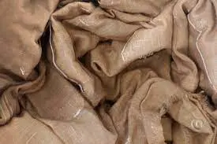
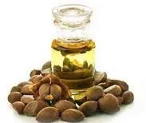

• Tea dye :
 Wood, silk or synthetic yarn type fibres are dyed in tea extract solution (1:20) containing 10% of tea extract powder with met-mordant at 60°C for six hours.After washing, the dyed yarn with water, the yarn weight increased by 3-5%. By metal-mordants, the colour of yarn changes to pale green, yellow-green, yellow, brown and copper-yellow.
It is found that despite repeated washing or exposure to sunlight for the fading test, the colour of yarn is maintained at least for one year.
Price:9.99 USD
• Tea Seed Oil :

Tea seeds are used as a source of supplementary protein and edible oil for human consumption, apart from many other industrial applications.
The prospects of tea seed oil are immense. It can be a substitute for any edible oil; it can also be used as a cheaper alternative to olive oil which is mostly imported.
Cosmetic industry may use it for manufacturing hair lotion, soap, etc.
The thiosaponin has some medicinal value and it acts as an adjuvant, anti-inflammatory agent.
Price : 15.00 USD
• Medicinal Tea :
 These are classified according to the raw material used and the type of manufacture adopted. Orthodox processed tea leaves produce “particular” teas like semi-fermented oolongs and reprocessed, scented and compressed teas. Delicately plucked and processed teas make numerous “prominent” teas. The raw material is taken from the plants which are well grown in an excellent habitat with advantageous ecological conditions and are made skillfully and exquisitely with delicate flush buds and leaves of the tea plants belonging to fine varieties. Herbal teas are made by processing veritable teas together with medicinal herbs, which are used to complement the curative properties of the former for many ailments .Herbal teas are mainly used to treat mild illnesses and will cost about 5USD in average per 1 cup of herbal tea.
These are classified according to the raw material used and the type of manufacture adopted. Orthodox processed tea leaves produce “particular” teas like semi-fermented oolongs and reprocessed, scented and compressed teas. Delicately plucked and processed teas make numerous “prominent” teas. The raw material is taken from the plants which are well grown in an excellent habitat with advantageous ecological conditions and are made skillfully and exquisitely with delicate flush buds and leaves of the tea plants belonging to fine varieties. Herbal teas are made by processing veritable teas together with medicinal herbs, which are used to complement the curative properties of the former for many ailments .Herbal teas are mainly used to treat mild illnesses and will cost about 5USD in average per 1 cup of herbal tea.
Price:10.99 USD
Local Tea Shops
Visit our shops with the links shown below
•Tea Sales 1
•Tea Sales 2